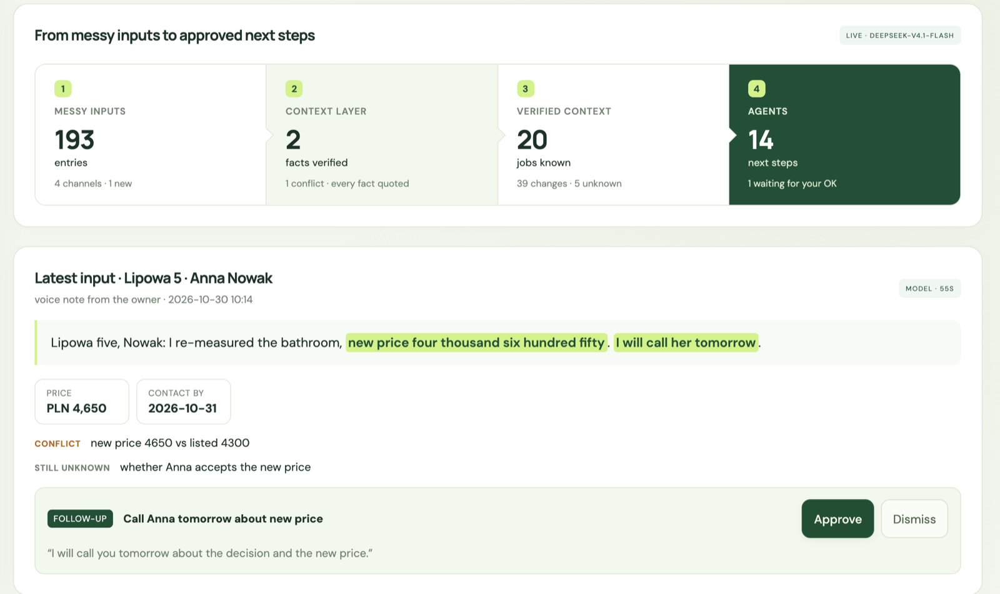

Card says ETA Thursday. Kuba says the parts are here.
FIELDBOOK
Cleans your company’s data.
Then acts on it.
Team Reactive · TechWeek Hackathon 2026
Inside a small garage
IT’S ALL OVER
IT’S ALL OVER
THE PLACE.
XLSXzlecenia_2026_FINAL_v3.xlsx
EmailRe: Re: Fwd: faktura Nowak
PDFcennik_InterCars_X.pdf
WhatsAppany news about my car?
JPGIMG_4821.jpg
Voice note0:38 · Kuba
XLSXklienci_stary.xlsx
SMS1,450 PLN all in. OK?
Paperorder sheet, coffee stain
EmailZamówienie #88213 potwierdzone
Callmissed · 08:05
DOCXgwarancja_wzor (2).docx
XLSXmagazyn.xlsx
CalendarGolf WX 4821K?
WhatsApp · Thu 08:12 · Anna Nowak
“Good morning, any news about my car?”
Marek is under a car. Kuba has the answer.
What Fieldbook does
IT CLEANS
IT CLEANS
THE MESS.
Paper · Tuebelt kit + pump, ETA Thu
SMS · MonI need the car before the weekend!!
Voice note · Thuthe parts came in this morning
→
Parts
ETA Thu Arrived Thu morning
Newest wins Voice note · Thu
Deadline
Before the weekend
SMS · Mon
Price
1,450 PLN, accepted
SMS · Mon
Anna gets an answer.
Good morning Mrs Nowak. The parts have arrived. Your Golf will be ready tomorrow around 12:00, in time for the weekend.
↑ She said that on Monday. It remembered.
Reactive. But proactive.
IT DOESN’T WAIT TO BE ASKED.
Clean data makes it safe to act.
Company name and tax ID for Anna’s invoice.
Tell Anna: ready tomorrow around 12:00.
Plus
NO TYPING.
NO TYPING.
JUST TALK.
Hands busy? A voice note is one more source. ElevenLabs writes it down.
What happened on the job?
So, uh, Nowak’s Golf. The parts came in this morning, I’m putting the belt in now, should be ready tomorrow around noon. Oh and she wants the invoice on her company.
MESSY IN. CLEAN OUT.
Collect
Files, emails, chats
+ voice notes (ElevenLabs)
Clean
Dated, cited, newest wins
Reactor reads only what answers
Act
Flags, next steps, client reply
Before anyone asks
PLUG IT IN. IT ORGANIZES.
- @Emails
- XExcel sheets
- ✎Notes
- ◐WhatsApp · SMS
- ≋Voice notes

The live app · synthetic data · email and Excel connectors next
147×
less text for Reactor to read per question.
Whole history · ~1.6M characters
What Reactor reads · ~11k
Idea. Harness. Application.
Unconventional
- Cleans messy company data
- Then acts on it, proactively
- Not said → not changed
Reactor, used where it counts
- 147× less text to read
- Every line checked before the card
- Never stalls: cache + fallback
A real use case
- Live board + client reply
- Voice in and out (ElevenLabs)
- 18–24k Polish garages first
FIELDBOOK
Clean data. Proactive agent.
Thank you · Team Reactive
Kuba’s note, Thu 09:30
IT ONLY WRITES WHAT IT CAN QUOTE.
Status
Waiting for parts In progress
I’m putting the belt in now
Parts
Arriving Thu Arrived this morning
The parts came in this morning
Ready
Tomorrow ~12:00
should be ready tomorrow around noon
Invoice
Company invoice
she wants the invoice on her company
Price
1,450 PLN
Not in the note, so it stays
Every AI agent needs a memory it can trust.
Trades
→
Distributors
→
Personal assistants
18–24k
car workshops
~90,000
installers
Sources: Auto Świat (17.7k independent), SDCM via PAP (24k); GUS via BOŚ Bank, Oct 2024 (PKD 43.2).
Old and new get mixed up.
“Arriving Thu” and “arrived this morning” are both in the history. Newest wins.